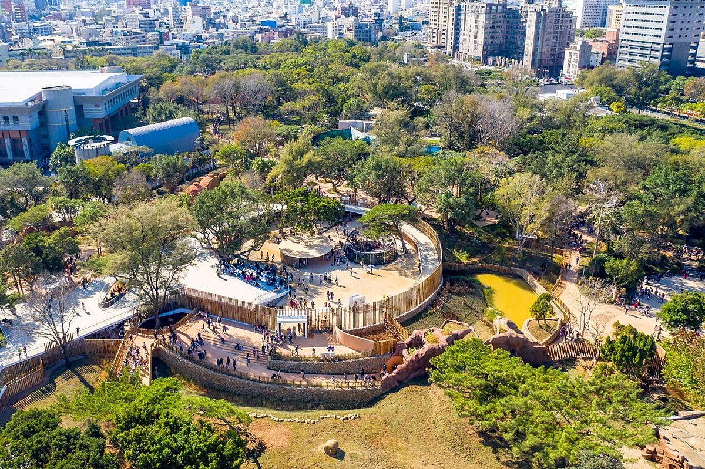
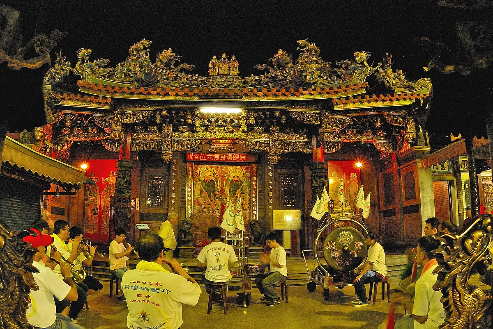
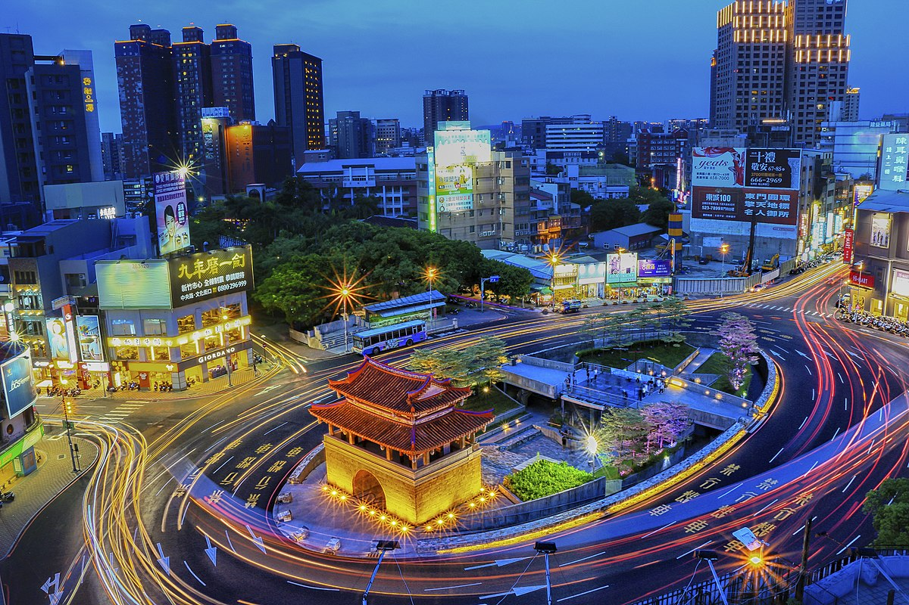

新竹市立動物園

相關簡介
新竹市立動物園位於新竹公園內，佔地面積達2.7公頃。早期為新竹公園內兒童遊樂園附設的動物園區。
1960年開始擴充修建動物欄舍，並且完成全台首座天然猛獸放飼場。同時，陸續有許多熱心民眾捐贈動物，
如大象、鴛鴦、獅子和鱷魚等等。1971年獲省政府核准成為獨立機關，並成為北台灣重要觀光景點，一直延續至今。
票價
全票 50元，一般民眾（12歲以上未滿65歲）
優待票 25元，6歲以上至未滿12歲之兒童。
團體票 40元，20人以上團體(現場團體)或一次購買100張以上全票(紙本全票)。
官方網站
相關簡介
城隍為專門掌管陰間與陽間賞罰善惡的神明，因此城隍廟的佈置猶如古代的衙門。
創建於西元1748年，其廟宇規模在當時是全臺之最，廟埕的市集小吃攤，成為新竹特色之一。
據史載，西元1891年，全臺官民在此舉辦護國祐民怯除災厄祈禱醮法會，晉封為新竹都城隍，
為臺澎地區唯一的省級城隍廟，又因顯靈禦匪有功，光緒皇帝頒賜「金門保障」匾額，其後陸續獲歷代皇帝封贈，
成為全臺官位最高的城隍爺。
票價
免費參觀
官方網站

新竹都城隍廟
新竹東門城迎曦門

相關簡介
新竹古地名竹塹，清道光6年（西元1826年）進士鄭用錫等人奏請改建竹塹城為磚石造城牆，並建四座城門，
東門「迎曦門」、西門「挹爽門」、南門「歌薰門」、北門「拱辰門」。
日明治35年（西元1902年）臺灣總督府實施市區改正，拆除竹塹城牆及城門，僅保留東門迎曦門。
迎曦門為一柱廊式的城樓，樓高兩層，所在方位座西朝東偏南。城座由花崗石條以一層丁一層順的方法砌造而成，
前後各有外小內大的拱形門洞，正門門洞上方有額題「迎曦」，落款上題「道光戊子季冬」，
比完工的時間稍早；下題「署同知李慎彝監造」。 迎曦門的屋頂形式為歇山重檐並帶有翹脊，屋頂下的大木結構，
在翻修時以鋼筋混凝土仿作。城門的後方立有道光九年（西元1829年）的「新建臺灣府淡水廳城碑記」石碑一方，
為竹塹築城史的見證之一。
票價
免費參觀
官方網站